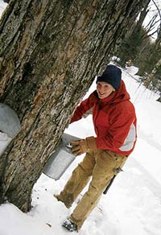

Although we tend to think of all syrup as generically “maple,” most commercial syrups contain little, if any, sugar from maple trees. Most of the pancake syrup that Americans eat is mostly corn syrup and lacks the rich and subtle flavors of pure maple syrup. Legally, these corn-syrup based products can’t be called “maple syrup” - instead the label will say “pancake syrup,” or simply “syrup.” That makes it easy to pick out the real thing: Pure maple syrup will be clearly identified both on the front of the bottle, and on the ingredients list.
Real maple syrup costs quite a bit more than other pancake syrups - think $6 for a small bottle, instead of $2. But the difference in flavor is worth the extra money. It's like drinking 100 percent fruit juice, instead of fruit drinks made with “natural fruit flavors.” Most pancake syrup tastes like sugar. Pure maple syrup tastes like maple trees.
How It's Made
Maple syrup comes mainly from the northeastern United States, and eastern Canada, where there are large stands of sugar maple trees. Making it is labor intensive: To harvest the sap, you put a tap into the tree. When temperatures rise in the early spring, the sap flows through the tap and into a bucket below. Once you’ve collected enough of the sap, you boil it to remove most of the water and make it sweeter. Forty gallons of sap makes about 1 gallon of syrup. If harvesting is done responsibly, it doesn’t hurt the tree, and can take place year after year.
New England farmers and homesteaders have been making maple syrup for generations, and many have written about how it works. One book with a lot more information is The Maple Sugar Book by Helen and Scott Nearing. Noel Perrin is another rural living writer who has described sugar making in detail, including a book, the Amateur Sugar Maker and a pamphlet, Making Maple Syrup.
Make Your Own
If you’d like to try making maple syrup yourself, you can find much more information through extension service publications. Here are two to try:
http://www.umext.maine.edu/onlinepubs/PDFpubs/7036.pdf
http://maple.dnr.cornell.edu/FAQ.htm
Although it may be a lot of work, making maple syrup doesn’t require as many trees as you might think. You can make a gallon with the sap from just a few sugar maple trees. (Specifically how much sap you get depends on a number of factors, including the size of the tree. See the publications above for more information.)
You can also make syrup from birch trees, or other types of maple trees. But the sap is not as sweet, so you have to collect more of it to boil down into syrup. For example, birch trees can take as much as 100 gallons of sap to make a gallon of syrup.
Finding the Real Thing
100 percent pure maple syrup isn’t hard to find, just read labels carefully in the grocery store. If you’d like to support small or local producers, you can check online, or if you’re in a maple-syrup producing area, head to the local farmers market. A good source for finding local producers of all types of foods is localharvest.org, which has listings for both birch and maple syrup.
If you have maple syrup stories or recipes to share, we’d love to hear them! You can add them to the comments field below.
|
 Jessica Klick Jessica Klick harvests sap from a maple tree on her land in Vermont. |
|
|